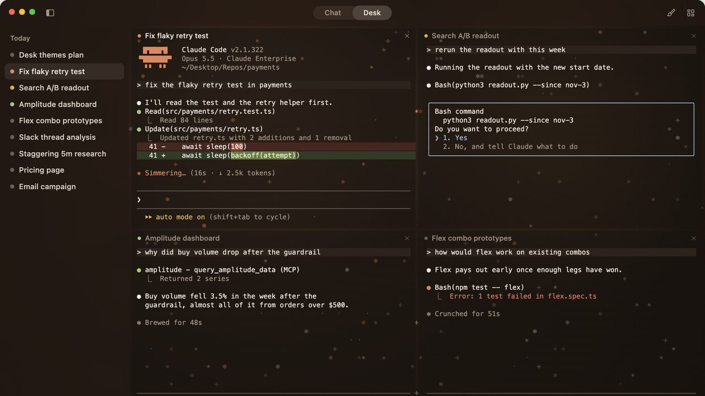
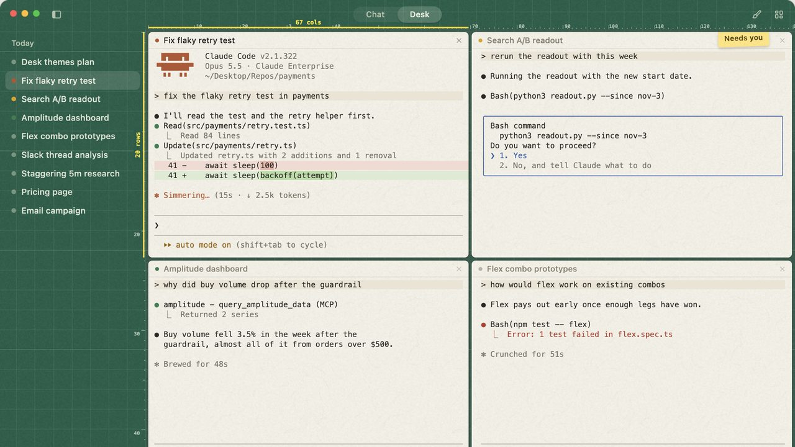
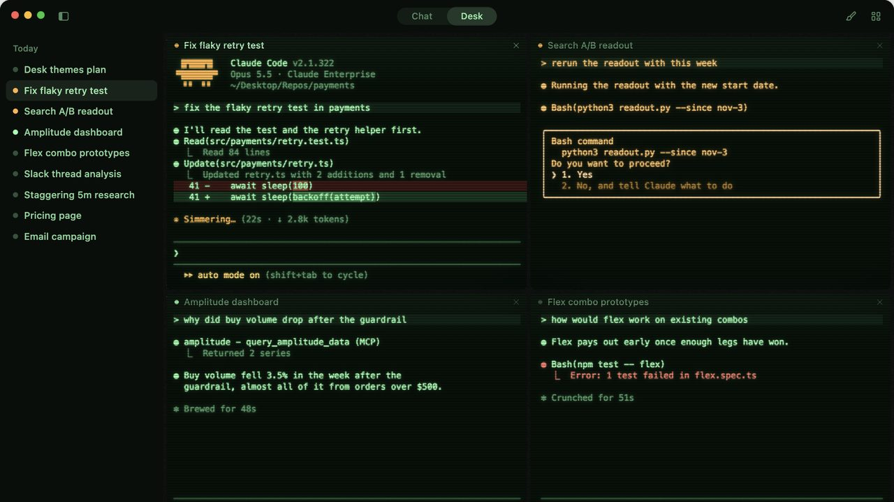
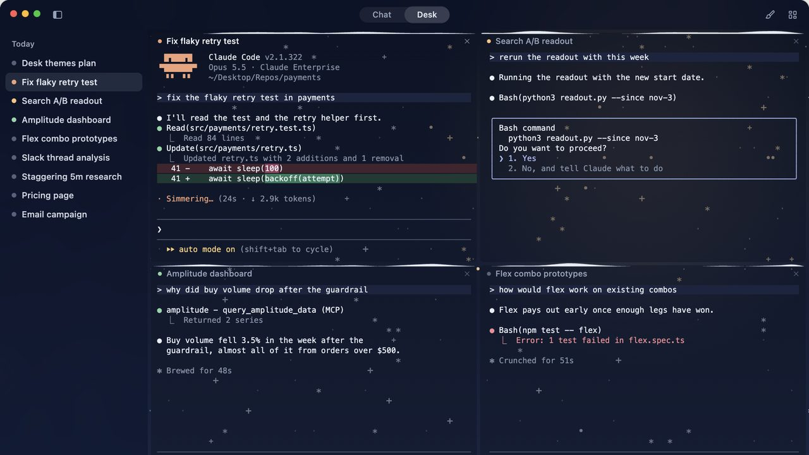
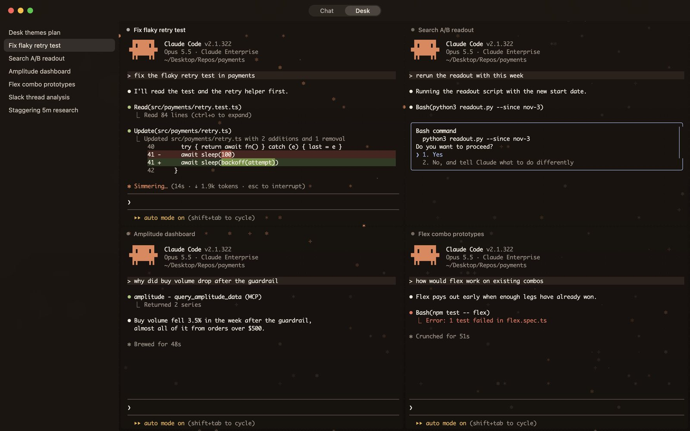
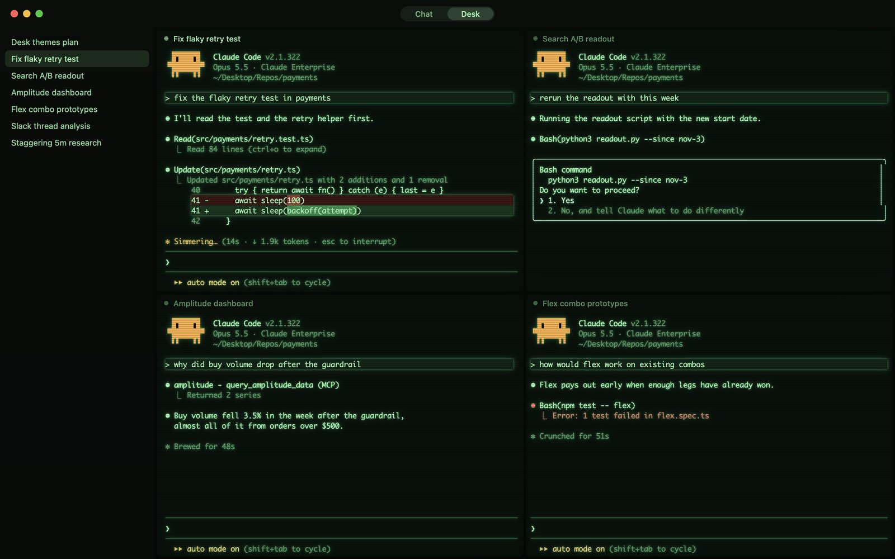

<title>Spool Desk Themes</title>
<meta name="claude:viewport-fit-sides" content="cover">
<!--bench:css-->
<link rel="stylesheet" href="./assets/proto.css">
<style>
/* page-specific layout only */
#desk-proto{width:100%}
.proto-controls{display:flex;flex-wrap:wrap;align-items:center;gap:var(--b-3);margin-top:var(--b-3)}
.proto-controls .b-label{margin-right:calc(var(--b-1) * -1)}
.b-vtab-panel .b-media-card{margin-top:var(--b-4)}
</style>
<main class="b-page" data-width="read">
  <header class="b-masthead">
    <div class="b-eyebrow"><span class="b-label">Spool</span><span class="b-label">Build plan</span><span class="b-label">Nov 13, 2026</span></div>
    <h1 class="b-display">Themes for the Desk</h1>
    <p class="b-lede">In the video you sent, Claude Code's desktop app gets a /theme tray of live ASCII wallpapers. This plan brings the idea to Spool's Desk, where every pane is a live Claude terminal. The choices I need from you are at the end.</p>
    <dl class="b-meta">
      <div><dt class="b-label">Status</dt><dd><span class="b-chip" data-status="paused">Waiting on you</span></dd></div>
      <div><dt class="b-label">Themes</dt><dd>8, with today's look as the default</dd></div>
      <div><dt class="b-label">Tested on</dt><dd>xterm 6 in Electron 33, Claude Code 2.1.322</dd></div>
      <div><dt class="b-label">Builds on</dt><dd>The Desk from Nov 12</dd></div>
    </dl>
  </header>

  <section class="b-section">
    <div class="b-section-head"><span class="b-label">Prototype</span><h2 class="b-h2">The Desk with the theme tray open</h2><p class="b-small">Click a theme, or click the window and use the arrow keys.</p></div>
    <figure style="margin:0" class="b-bleed">
      <div class="b-plate">
        <div class="b-corners" aria-hidden="true">
          <span class="b-corner" data-corner="fig">Fig 1</span><span class="b-corner" data-corner="title">Spool at 72% of real size</span>
          <span class="b-corner" data-corner="hint">T opens and closes the tray</span>
        </div>
        <div id="desk-proto"></div>
      </div>
      <div class="proto-controls">
        <span class="b-label">Wallpaper in panes</span>
        <div class="b-tabs" role="tablist" aria-label="Wallpaper in panes" id="proto-mode"><button class="b-tab" role="tab" aria-selected="true" data-mode="clear" type="button">Around text</button><button class="b-tab" role="tab" aria-selected="false" data-mode="faint" type="button">Faint</button></div>
        <button class="b-btn" type="button" id="proto-finish"><!--icon:circle-check-->Finish a turn</button>
        <button class="b-btn" data-variant="ghost" type="button" id="proto-layers" aria-pressed="false"><!--icon:layers-->Separate the layers</button>
      </div>
      <figcaption class="b-caption">The top-left pane is working, the top-right one is waiting on you, and the two below are done. Clicking a theme grows it out of the thumbnail, with the edge drawn in the new theme's material. The arrow keys preview with no animation, Return keeps the theme, and Escape puts back the one you started with. Finish a turn shows how each theme marks a pane that just finished. The panes here are HTML text standing in for Spool's real terminals.</figcaption>
    </figure>
  </section>

  <section class="b-section">
    <div class="b-section-head"><span class="b-label">Reference</span><h2 class="b-h2">Claude Code's /theme tray</h2></div>
    <div class="b-prose">
      <p>Typing /theme opens a tray above the composer with eight wallpapers: Claude Code, Cloud Drift, Honu Lagoon, Koi Pond, Jellyfish, Paper Boats, Fireflies and Moonlit. Each one is drawn in characters. Every pixel of a cloud or a koi is a glyph on a small tile, and the scenes move slowly.</p>
      <p>These parts carry over to the Desk:</p>
      <ul>
        <li>The wallpaper runs behind the whole window. The chat list and title bar are tinted glass over it, so the window reads as one scene.</li>
        <li>The chat column has a lighter lane behind it, so the text stays easy to read. On the Desk that becomes the choice of how much wallpaper shows inside panes.</li>
        <li>Clicking a thumbnail applies it right away, with a circular reveal that starts at the thumbnail and an edge drawn in characters.</li>
      </ul>
      <p>On the Desk, terminals cover almost the whole window, so the wallpaper has to show through the panes. The text in each pane also comes from Claude Code, which picks its own colors, so Spool has to pass the theme on to Claude.</p>
    </div>
  </section>

  <section class="b-section">
    <div class="b-section-head"><span class="b-label">Themes</span><h2 class="b-h2">The themes</h2><p class="b-small">Each one uses a single material in every layer and reacts in its own way to what Claude is doing.</p></div>
    <div class="b-grid" data-cols="2">
      <div class="b-panel b-media-card"><span class="b-media"><span class="b-media-tag">Still</span></span><span class="b-media-body"><span class="b-h3">Spool</span><span class="b-small">Today's look stays the default, with no wallpaper and solid panes.</span><span class="b-small">A waiting pane gets an amber ring.</span></span></div>
      <div class="b-panel b-media-card"><span class="b-media"><span class="b-media-tag">Moves at 12 fps</span></span><span class="b-media-body"><span class="b-h3">Clay</span><span class="b-small">Claude's clay color on a warm dark ground of Claude's spinner glyphs, · ✢ ✳ ✶ ✻ ✽, laid on the terminal grid.</span><span class="b-small">Glyphs near a working pane spin faster. A finished pane throws off a ring of ✻.</span></span></div>
      <div class="b-panel b-media-card"><span class="b-media"><span class="b-media-tag">Still</span></span><span class="b-media-body"><span class="b-h3">Glass</span><span class="b-small">Your desktop picture shows through macOS translucency. Panes are blurred glass with a fine light edge, and a soft highlight follows the pointer.</span><span class="b-small">A waiting pane gets an amber edge. A finished one gets a sweep of light.</span></span></div>
      <div class="b-panel b-media-card"><span class="b-media"><span class="b-media-tag">Still</span></span><span class="b-media-body"><span class="b-h3">Paper</span><span class="b-small">The one light theme. Panes are sheets of paper on a green cutting mat, and rulers along the desk count terminal columns and rows.</span><span class="b-small">A waiting pane gets a sticky note and a finished one a pencil check. Hovering a pane marks its size on the rulers.</span></span></div>
      <div class="b-panel b-media-card"><span class="b-media"><span class="b-media-tag">Still</span></span><span class="b-media-body"><span class="b-h3">Blueprint</span><span class="b-small">A drafting grid is laid on the terminal cells, and pane edges are drawn in fine white line.</span><span class="b-small">A waiting pane gets a revision cloud around its title. Resizing and Tidy show dimension lines in columns and rows.</span></span></div>
      <div class="b-panel b-media-card"><span class="b-media"><span class="b-media-tag">Still, slow scan bar</span></span><span class="b-media-body"><span class="b-h3">Phosphor</span><span class="b-small">Panes are green CRT screens on a dark bezel, with scanlines and a soft glow on the text.</span><span class="b-small">A waiting screen turns amber. Switching to Phosphor powers the screens on like a CRT.</span></span></div>
      <div class="b-panel b-media-card"><span class="b-media"><span class="b-media-tag">Moves at 15 fps</span></span><span class="b-media-body"><span class="b-h3">Snowfall</span><span class="b-small">Snow drawn in characters falls behind the panes on a night sky and settles in drifts on their top edges.</span><span class="b-small">A waiting pane casts warm light on the snow, and a finished one blows the flakes back.</span></span></div>
      <div class="b-panel b-media-card"><span class="b-media"><span class="b-media-tag">Moves at 12 fps</span></span><span class="b-media-body"><span class="b-h3">Contour</span><span class="b-small">A topographic map drifts slowly behind the panes.</span><span class="b-small">Panes where Claude works rise into hills, so the lines bunch up around them in amber. A finished pane sends a ripple through the lines.</span></span></div>
    </div>
  </section>

  <section class="b-section">
    <div class="b-section-head"><span class="b-label">Structure</span><h2 class="b-h2">The layers, back to front</h2><p class="b-small">Every theme fills the same layers. Separate the layers, under Fig 1, pulls them apart.</p></div>
    <ol class="b-rows">
      <li class="b-row"><span class="b-row-n">1</span><div class="b-row-body"><h3 class="b-h3">Ground</h3><p>The ground is one canvas behind the whole window, drawn on the terminals' own cell grid of 7 by 16.5 points at Monaco 12. Each pane's first character is on that grid, so a glyph in the ground lines up with the text in front of it. It renders in a worker, away from terminal output.</p></div></li>
      <li class="b-row"><span class="b-row-n">2</span><div class="b-row-body"><h3 class="b-h3">Chrome</h3><p>The title bar and chat list are tinted glass over the ground, so the window reads as one scene.</p></div></li>
      <li class="b-row"><span class="b-row-n">3</span><div class="b-row-body"><h3 class="b-h3">Panes</h3><p>Panes are glass at one of three strengths. Solid shows no ground. Faint lets 12% of it through. Around text shows the ground in empty cells and fades it out under text. Gaps stay 4px and corners 6px.</p></div></li>
      <li class="b-row"><span class="b-row-n">4</span><div class="b-row-body"><h3 class="b-h3">Claude's text</h3><p>xterm draws on a transparent background, so the pane's glass is the background. Its 16 colors come from the theme, and Claude Code's own colors come from a theme file Spool writes for it.</p></div></li>
      <li class="b-row"><span class="b-row-n">5</span><div class="b-row-body"><h3 class="b-h3">Effects</h3><p>One canvas over the panes draws waiting and finished states, drop targets, dimension lines and the reveal edge. It stays empty while nothing is happening.</p></div></li>
      <li class="b-row"><span class="b-row-n">6</span><div class="b-row-body"><h3 class="b-h3">Overlays</h3><p>Each theme restyles what floats over the panes, such as the &#8984; labels and drop zones.</p></div></li>
    </ol>
    <div class="b-prose">
      <p>Rules that keep the layers out of each other's way:</p>
      <ul>
        <li>The ground fades under any cell that holds text, read from the terminal buffer four times a second. Each theme's text colors pass WCAG AA against its pane color.</li>
        <li>Ambient motion stays in the ground, at 12 to 15 frames a second. Reactions to Claude's state play once and stop, and keyboard actions never animate.</li>
        <li>Claude's state shows on the pane and in the ground around it, so a waiting Claude stands out from across the Desk.</li>
      </ul>
    </div>
  </section>

  <section class="b-section">
    <div class="b-section-head"><span class="b-label">Switching</span><h2 class="b-h2">Picking a theme</h2></div>
    <div class="b-prose">
      <ul>
        <li>A brush button in the title bar, left of Tidy, opens the tray, and so does &#8997;&#8984;T. It rises from the bottom of the Desk with one live thumbnail per theme.</li>
        <li>Clicking a thumbnail applies it. The new theme grows out of the thumbnail in about 0.7 seconds, and each theme draws the edge its own way: spinner glyphs for Clay, a compass line for Blueprint, ink for Paper, a CRT power-on for Phosphor.</li>
        <li>The arrow keys preview each theme at once with no animation, the way VS Code's theme picker does. Return keeps it. Escape puts back the theme you had when the tray opened.</li>
        <li>The terminals change in the same frame. Claude's own colors follow about half a second later, once Claude Code reloads its theme file.</li>
        <li>Spool saves your theme along with the wallpaper and motion settings.</li>
      </ul>
    </div>
    <div class="b-table-wrap"><table class="b-table">
      <thead><tr><th>Key</th><th>Action</th></tr></thead>
      <tbody>
        <tr><td data-strong>&#8997;&#8984;T</td><td>Open or close the tray</td></tr>
        <tr><td data-strong>Arrow keys</td><td>Preview the next or previous theme</td></tr>
        <tr><td data-strong>Return</td><td>Keep the previewed theme</td></tr>
        <tr><td data-strong>Esc</td><td>Go back to the theme you had</td></tr>
        <tr><td data-strong>Click</td><td>Apply with the reveal</td></tr>
      </tbody>
    </table></div>
  </section>

  <section class="b-section">
    <div class="b-section-head"><span class="b-label">Research</span><h2 class="b-h2">Tests with real terminals</h2><p class="b-small">I ran each idea against xterm 6 with its WebGL renderer in Electron 33, the engine Spool uses, and against Claude Code 2.1.322 without sending it a message.</p></div>
    <div class="b-bleed">
      <div class="b-vtabs">
        <div class="b-vtabs-list" role="tablist" aria-orientation="vertical" aria-label="Research results">
          <button class="b-vtab" role="tab" id="q-1" aria-controls="p-1" aria-selected="true" type="button">Wallpaper behind a terminal</button>
          <button class="b-vtab" role="tab" id="q-2" aria-controls="p-2" aria-selected="false" type="button">Claude's colors following the theme</button>
          <button class="b-vtab" role="tab" id="q-3" aria-controls="p-3" aria-selected="false" type="button">Knowing each Claude's state</button>
          <button class="b-vtab" role="tab" id="q-4" aria-controls="p-4" aria-selected="false" type="button">Switching speed</button>
          <button class="b-vtab" role="tab" id="q-5" aria-controls="p-5" aria-selected="false" type="button">Glow and scanlines</button>
          <button class="b-vtab" role="tab" id="q-6" aria-controls="p-6" aria-selected="false" type="button">The reveal with live terminals</button>
          <button class="b-vtab" role="tab" id="q-7" aria-controls="p-7" aria-selected="false" type="button">Cursor trails</button>
          <button class="b-vtab" role="tab" id="q-8" aria-controls="p-8" aria-selected="false" type="button">GPU limits</button>
          <button class="b-vtab" role="tab" id="q-9" aria-controls="p-9" aria-selected="false" type="button">Electron 33</button>
        </div>
        <div>
          <section class="b-vtab-panel" role="tabpanel" id="p-1" aria-labelledby="q-1">
            <h3 class="b-h2">Works. xterm can draw on a transparent background.</h3>
            <p>xterm 6's WebGL renderer paints its background as one rectangle in the theme's background color, alpha included. With a transparent theme the ground shows through, and glyphs keep their edges on a Retina screen. Spool has to create terminals with allowTransparency on, since it can't be switched on later.</p>
            <div class="b-panel b-media-card"><span class="b-media" style="aspect-ratio:16/10"></span><span class="b-media-body"><span class="b-small">Four real xterm panes over the Clay ground, with Claude Code screens scripted in Clay's colors. The glyphs stay out of the text.</span></span></div>
          </section>
          <section class="b-vtab-panel" role="tabpanel" id="p-2" aria-labelledby="q-2" hidden>
            <h3 class="b-h2">Works, per terminal and live.</h3>
            <p>Claude Code reads custom themes from ~/.claude/themes, one JSON file per theme with a name, a base preset and color overrides, and theme is an ordinary settings key. I started Claude with --settings '{"theme":"custom:spool-probe"}' and it drew in the probe's colors instead of your dark-daltonized default. Then I rewrote the file while it ran, and its colors changed without a restart. Claude Code watches that folder, so Spool can recolor every Claude it started by rewriting one file.</p>
            <details class="b-details"><summary>Show detail</summary><div class="b-details-body"><p>The folder has to exist before Claude starts, so Spool creates it at launch. The overrides cover about 70 tokens, including claude, text, inactive, permission, promptBorder, userMessageBackground, the diff colors and clawd_body. Clawd's eyes are painted as black cells through clawd_background, so each theme sets that too. Claude Code's issue tracker lists cases where some overrides were ignored, among them diff colors and markdown, so the first build checks each token on screen. The probe file was deleted afterwards and no transcript was created.</p></div></details>
          </section>
          <section class="b-vtab-panel" role="tabpanel" id="p-3" aria-labelledby="q-3" hidden>
            <h3 class="b-h2">Possible through Claude's status signal, OSC 7501.</h3>
            <p>Claude Code 2.1.295 and later asks the terminal about OSC 7501 when it starts. If the terminal answers, Claude reports its state as working, blocked, done, error or idle, along with the kind of block and a title. Spool's terminals can answer and listen, which gives each pane its state the moment it changes. That drives the waiting and finished reactions, and it can replace the waiting flag in ~/.claude/sessions, which we haven't seen fire.</p>
            <details class="b-details"><summary>Show detail</summary><div class="b-details-body"><p>I found the question and the report format in the 2.1.322 binary and watched Claude ask the question. Claude reports only when its state changes, and changing it means sending a message, so I haven't seen a report arrive yet.</p></div></details>
          </section>
          <section class="b-vtab-panel" role="tabpanel" id="p-4" aria-labelledby="q-4" hidden>
            <h3 class="b-h2">About 10 ms for four terminals.</h3>
            <p>Setting a new palette on four WebGL terminals took 0.4 ms, and all four had redrawn within 8 to 12 ms. The ground's work per frame was 0.02 ms for Clay and Snowfall and 1.9 ms for Contour, which ran on the CPU in the test and moves into a shader in the real build.</p>
          </section>
          <section class="b-vtab-panel" role="tabpanel" id="p-5" aria-labelledby="q-5" hidden>
            <h3 class="b-h2">Both work without touching xterm.</h3>
            <p>On a transparent terminal, a CSS drop-shadow on xterm's canvas glows around the glyphs alone. Scanlines are a gradient laid over the pane. Phosphor uses both.</p>
            <div class="b-panel b-media-card"><span class="b-media" style="aspect-ratio:16/10"></span><span class="b-media-body"><span class="b-small">Phosphor on real xterm panes. The amber Clawd and the glow come from the same CSS on every pane.</span></span></div>
          </section>
          <section class="b-vtab-panel" role="tabpanel" id="p-6" aria-labelledby="q-6" hidden>
            <h3 class="b-h2">Works in Electron 33.</h3>
            <p>View Transitions capture xterm's WebGL canvases correctly. The old theme is a still frame and the new one stays live, so Claude keeps printing inside the circle while it grows.</p>
            <div class="b-panel b-media-card"><span class="b-media" style="aspect-ratio:16/10"></span><span class="b-media-body"><span class="b-small">A reveal from Spool to Clay paused partway. The arc at the bottom left and top right is the edge of the circle.</span></span></div>
          </section>
          <section class="b-vtab-panel" role="tabpanel" id="p-7" aria-labelledby="q-7" hidden>
            <h3 class="b-h2">Left out. Claude hides the terminal cursor.</h3>
            <p>Claude Code turns off the terminal's cursor and draws its own, which is why Ghostty's cursor-trail shaders stop working inside Claude Code. Two reports in Claude Code's issue tracker describe it. Spool's effects react to Claude's state instead of the cursor.</p>
          </section>
          <section class="b-vtab-panel" role="tabpanel" id="p-8" aria-labelledby="q-8" hidden>
            <h3 class="b-h2">16 WebGL contexts per page.</h3>
            <p>Chromium drops the oldest WebGL context once a page has 16. Each visible terminal holds one today, and themes add two, the ground and the effects layer. That makes 14 visible panes the most before a terminal falls back to xterm's slower DOM renderer.</p>
          </section>
          <section class="b-vtab-panel" role="tabpanel" id="p-9" aria-labelledby="q-9" hidden>
            <h3 class="b-h2">Upgrade it first.</h3>
            <p>Electron 33 reached end of life on Apr 28, 2025. It also predates the fix for the macOS 26 bug where Electron windows drove up WindowServer's GPU use, which shipped in Electron 36.9.2, 37.6.0 and 38.2.0. Animated themes would add to that load. The current release is Electron 45.</p>
            <details class="b-details"><summary>Show detail</summary><div class="b-details-body"><p>Real Liquid Glass in Electron needs a third-party addon, electron-liquid-glass, which places Apple's glass view behind the page through a private API and needs a transparent window. Glass uses the vibrancy Spool already turns on, and the addon can come later if you want it.</p></div></details>
          </section>
        </div>
      </div>
    </div>
  </section>

  <section class="b-section">
    <div class="b-section-head"><span class="b-label">Plan</span><h2 class="b-h2">Build order</h2><p class="b-small">Each phase ends with typecheck, build and screenshots from the hidden test window. Nothing gets committed until you approve it.</p></div>
    <div class="b-bleed">
      <div class="b-table-wrap"><table class="b-table" data-wrap>
        <thead><tr><th>Phase</th><th>You get</th><th>Main changes</th><th>Status</th></tr></thead>
        <tbody>
          <tr><td data-strong>1. Electron upgrade</td><td>The same app on Electron 45, with the macOS 26 GPU fix</td><td>package.json, a check of node-pty's prebuilt binary, the webview and page-capture paths</td><td><span class="b-chip" data-status="paused">Needs your OK</span></td></tr>
          <tr><td data-strong>2. Theme engine and Claude's colors</td><td>Spool, Paper and Phosphor, switched from the menu</td><td>theme/themes.ts and theme/apply.ts, colors in app.css moved onto tokens, lib/terminals.ts for transparent terminals, palettes and OSC 7501, main/claude-theme.ts, the settings flag in pty.ts</td><td><span class="b-chip" data-status="todo">Planned</span></td></tr>
          <tr><td data-strong>3. Ground renderer</td><td>Clay, Glass and Blueprint, with wallpaper inside panes</td><td>ground/ with a WebGL2 worker on an OffscreenCanvas, a glyph atlas in the terminal font, one file per scene, text masks, frame caps and pausing when the window is hidden</td><td><span class="b-chip" data-status="todo">Planned</span></td></tr>
          <tr><td data-strong>4. Tray and reveal</td><td>The brush button, &#8997;&#8984;T, live thumbnails and the reveal</td><td>components/ThemeTray.tsx, theme/reveal.ts</td><td><span class="b-chip" data-status="todo">Planned</span></td></tr>
          <tr><td data-strong>5. Reactions</td><td>Snowfall and Contour, plus state reactions, drop zones and &#8984; labels in every theme</td><td>effects/ canvas, Desk.tsx hooks for drags, resizes and Tidy</td><td><span class="b-chip" data-status="todo">Planned</span></td></tr>
          <tr><td data-strong>6. Polish</td><td>Light and dark pairing and a settings panel</td><td>The battery rule, a contrast check over every palette, screenshots of each theme in each state</td><td><span class="b-chip" data-status="todo">Planned</span></td></tr>
        </tbody>
      </table></div>
    </div>
  </section>

  <section class="b-section">
    <div class="b-section-head"><span class="b-label">Decisions</span><h2 class="b-h2">Choices before I start</h2><p class="b-small">My pick comes first in each.</p></div>
    <ol class="b-rows">
      <li class="b-row"><span class="b-row-n">1</span><div class="b-row-body"><h3 class="b-h3">Upgrade Electron first</h3><p>Move from 33 to 45 as its own step, before any theme work. The other choice is to build on 33 and upgrade later, with the macOS 26 GPU bug still in.</p></div></li>
      <li class="b-row"><span class="b-row-n">2</span><div class="b-row-body"><h3 class="b-h3">Which themes, in which order</h3><p>Paper, Phosphor, Clay, Glass and Blueprint in phases 2 and 3, Snowfall and Contour in phase 5. Tell me any you'd cut or move up.</p></div></li>
      <li class="b-row"><span class="b-row-n">3</span><div class="b-row-body"><h3 class="b-h3">How much wallpaper shows inside panes</h3><p>Around text, with the ground at full strength in empty cells and faded under text. Or faint, at 12% everywhere. Or solid, so the wallpaper shows only in the chrome and the 4px gaps. Fig 1 has the first two.</p></div></li>
      <li class="b-row"><span class="b-row-n">4</span><div class="b-row-body"><h3 class="b-h3">Claude's colors follow the theme</h3><p>Spool writes ~/.claude/themes/spool.json and starts its own Claudes with a theme setting. Your iTerm sessions keep dark-daltonized, and Spool shows up as one more theme in Claude Code's own /theme list. The other choice leaves Claude's colors alone, which clashes in Paper and Phosphor.</p></div></li>
      <li class="b-row"><span class="b-row-n">5</span><div class="b-row-body"><h3 class="b-h3">What a theme covers</h3><p>The Desk, the title bar and the chat list now, and the chat view in phase 6. Or the whole window from the start, which adds the transcript view to phase 2.</p></div></li>
      <li class="b-row"><span class="b-row-n">6</span><div class="b-row-body"><h3 class="b-h3">Light and dark</h3><p>Follow macOS, with a light pick and a dark pick, Paper and Spool to start. Or one theme until you change it.</p></div></li>
      <li class="b-row"><span class="b-row-n">7</span><div class="b-row-body"><h3 class="b-h3">Motion</h3><p>Moving grounds run at half speed on battery and hold still when Reduce Motion is on. The other choices are full speed all the time, or still on battery.</p></div></li>
      <li class="b-row"><span class="b-row-n">8</span><div class="b-row-body"><h3 class="b-h3">Fonts</h3><p>Monaco 12 in every theme. Or a font per theme, such as Departure Mono for Phosphor, which changes the cell size, so every pane resizes when you switch.</p></div></li>
    </ol>
  </section>

  <footer class="b-footer"><span class="b-label">Sources</span><ol>
    <li><a href="https://x.com/handsher_NGU/status/2120912865658077388" target="_blank" rel="noopener">The video you sent, Nov 12, 2026</a></li>
    <li><a href="https://code.claude.com/docs/en/terminal-config" target="_blank" rel="noopener">Claude Code docs: custom themes and the themes folder</a></li>
    <li><a href="https://pkg.go.dev/tuios.dev/progstatus" target="_blank" rel="noopener">Program Status Protocol, OSC 7501</a></li>
    <li><a href="https://endoflife.date/electron" target="_blank" rel="noopener">Electron release and end-of-life dates</a></li>
    <li><a href="https://www.theregister.com/2025/10/02/macos_26_electron_slowdown/" target="_blank" rel="noopener">The Register on the macOS 26 Electron slowdown</a></li>
    <li><a href="https://app.unpkg.com/electron-liquid-glass@1.0.1/files/README.md" target="_blank" rel="noopener">electron-liquid-glass README</a></li>
    <li><a href="https://codereview.chromium.org/14217005/" target="_blank" rel="noopener">Chromium's limit of 16 WebGL contexts</a></li>
    <li><a href="https://github.com/ghostty-org/ghostty/discussions/6901" target="_blank" rel="noopener">Ghostty cursor uniforms for custom shaders</a></li>
    <li><a href="https://code.visualstudio.com/docs/configure/themes" target="_blank" rel="noopener">VS Code theme picker</a></li>
    <li><a href="https://alexharri.com/blog/ascii-rendering" target="_blank" rel="noopener">Alex Harri on choosing characters for ASCII rendering</a></li>
  </ol></footer>
</main>
<script src="./assets/proto.js"></script>
<script>
(() => {
  const mount = document.getElementById('desk-proto')
  if (!window.SpoolThemes || !mount) return
  SpoolThemes.mount(mount)
  const mode = document.getElementById('proto-mode')
  mode.addEventListener('click', (e) => { const b = e.target.closest('.b-tab'); if (b) SpoolThemes.setMode(b.dataset.mode) })
  document.getElementById('proto-finish').addEventListener('click', () => SpoolThemes.finishTurn())
  const layers = document.getElementById('proto-layers')
  layers.addEventListener('click', () => { const on = layers.getAttribute('aria-pressed') !== 'true'; layers.setAttribute('aria-pressed', String(on)); layers.lastChild.textContent = on ? 'Put the layers back' : 'Separate the layers'; SpoolThemes.setExplode(on) })
})()
</script>
